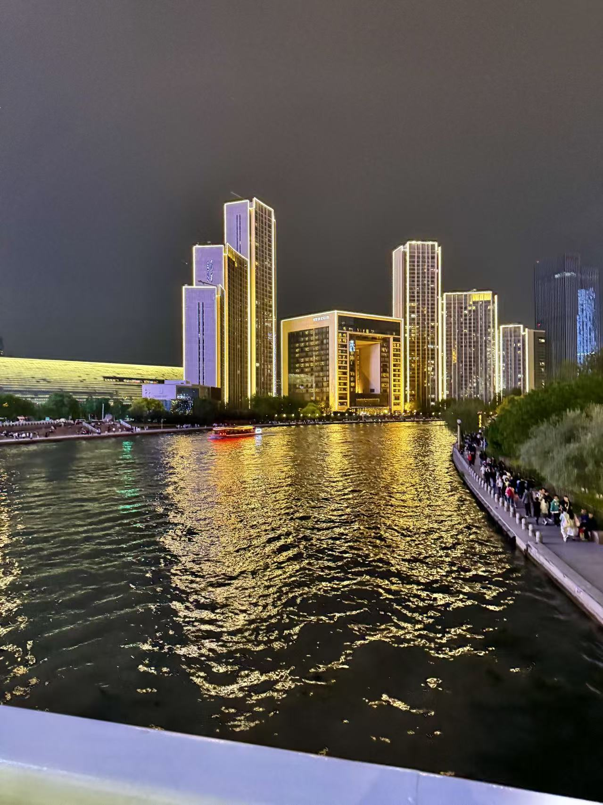
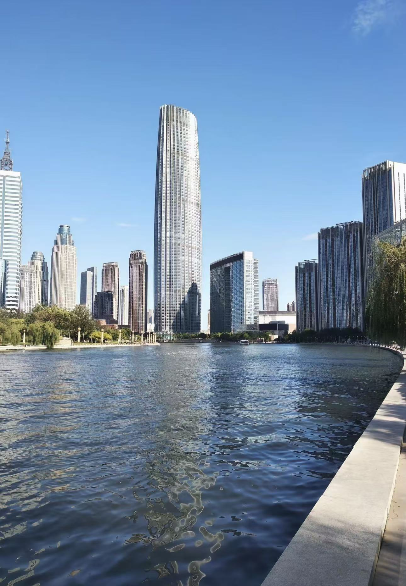

Haihe Riverside Run
Best for relaxed city runs and visible, flat riverfront movement with low stress.
View detailsTianjin running guide
Thoughtful routes across the Haihe riverside, city parks, and coastal paths—designed for daily movement, relaxed training, and city-night runs that feel genuinely local.
Choose a short, flat route with softer footing to build confidence and keep the pace easy.
Best match: South Cuiping Park LoopPick a wider riverside route with open views and relaxed city energy to enjoy the run.
Best match: Haihe Riverside RunGo for a stable loop with enough distance to maintain rhythm without becoming too demanding.
Best match: Water Park Lakeside LoopUse an open coastal path for steady mileage and training that supports endurance progress.
Best match: Binhai TEDA Coastal PathBest for relaxed city runs and visible, flat riverfront movement with low stress.
View detailsIdeal for beginners, easy jogs, and short workouts with a softer running surface.
View detailsPerfect for steady training and comfortable daily mileage with a calm urban setting.
View detailsEach route is matched to a specific running need, from beginner comfort to endurance training.
Runners can quickly understand surface, distance, and style before heading out.
Whether it is a morning jog, evening recovery run, or long aerobic session, the guide makes the choice easier.
Designed for city movement
We highlight spaces people actually use—riverside loops, open water-edge paths, and park routes that suit both routine practice and scenic evening runs.

